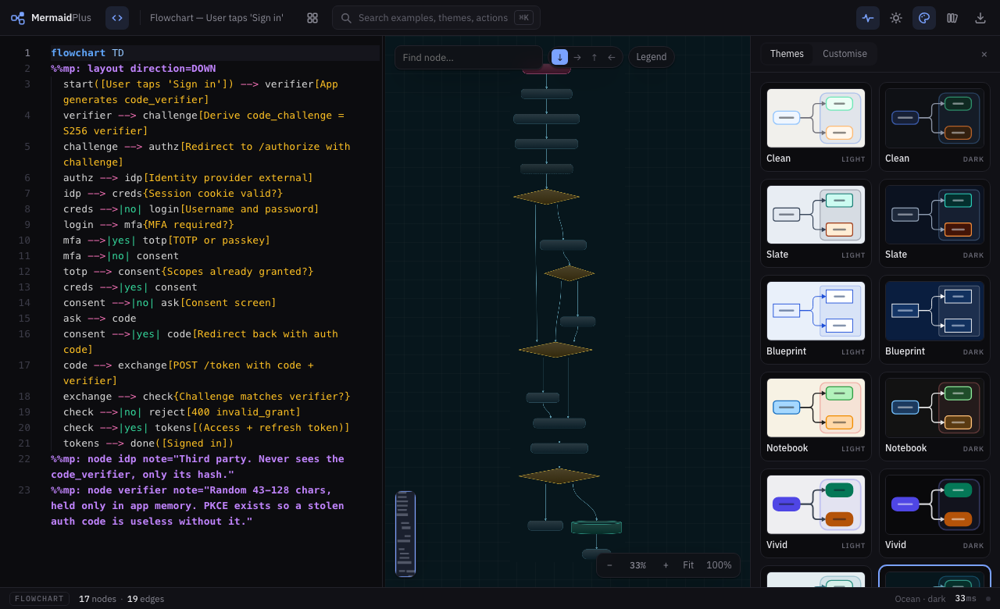
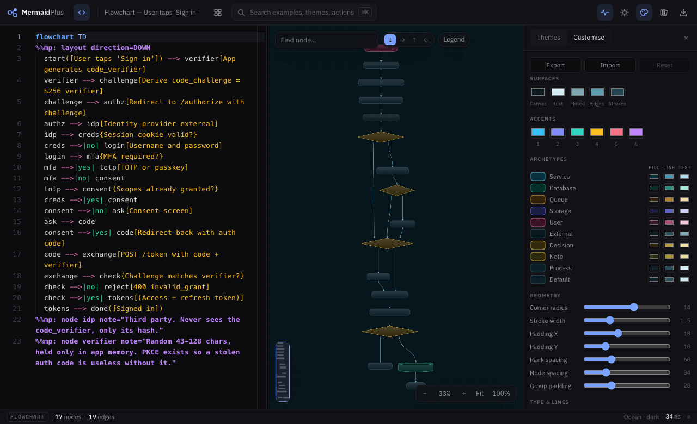

Chapter 6
Theming
A diagram going into a customer deck should not look like a diagram going into a runbook. Twenty themes, and the tokens underneath if none of them is yours.

The families
| Family | For |
|---|---|
| Clean | The default. Reads well in a document |
| Slate | Cooler and quieter. Good for dense systems |
| Blueprint | Technical drawing. Flat, one accent |
| Notebook | Hand-drawn texture, for something deliberately provisional |
| Vivid | High saturation. Slides and screens |
| Contrast | WCAG AA throughout |
| Paper | Warm and printed |
| Mono | Monochrome, for print and photocopies |
| Terminal | Phosphor on black |
| Ocean | Curved edges, cool blues and teals |
Each comes in light and dark, so the ids are clean-light, clean-dark, slate-light and so on.
Pin one to a document
A theme in the source overrides whatever the reader has selected, which is what you want for a diagram going into a report.
%%mp: theme slate-dark
Edit the tokens
The Customise tab opens the theme underneath: surfaces, the accent ramp, a fill, stroke and text colour per archetype, corner radius, stroke width, padding, spacing, type, routing and arrowheads.

Export writes the whole theme out as JSON, and Import reads it back. That is how you keep a company theme in a repository and hand it round.
Light and dark are not inversions of each other. Each is tuned separately, which is why the picker shows twenty cards rather than ten with a switch.